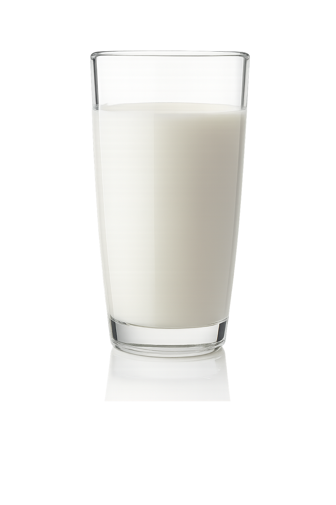
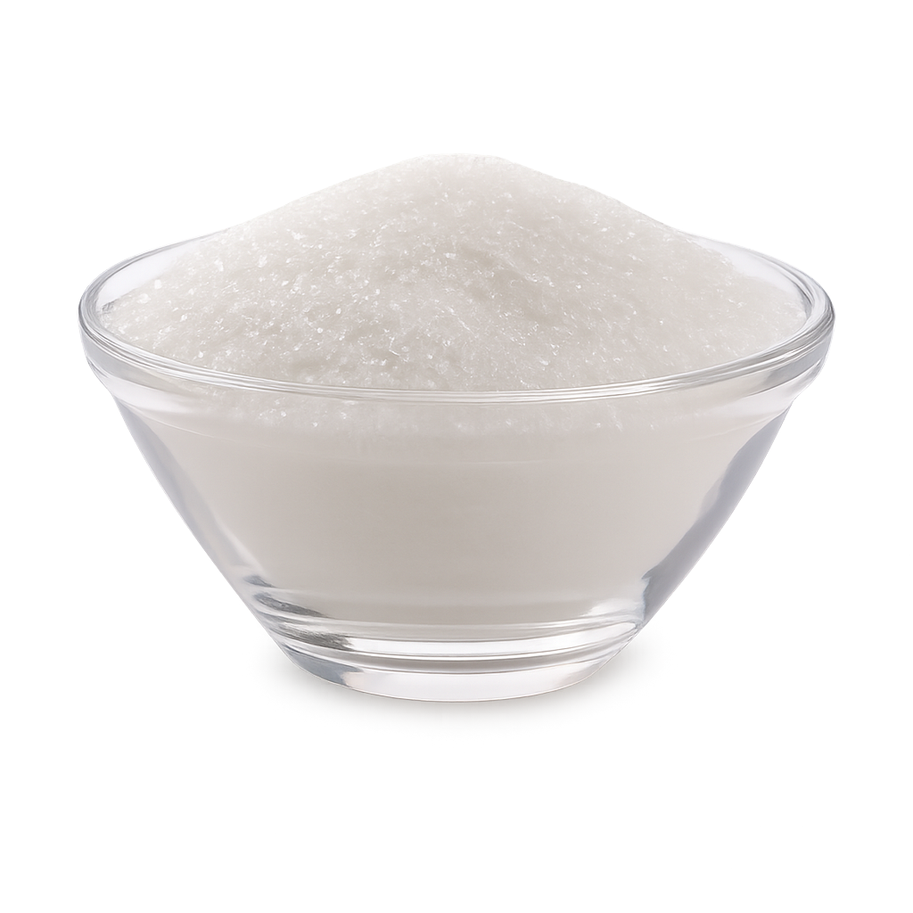
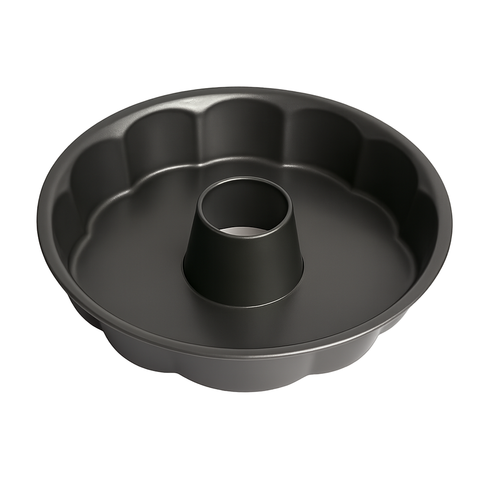
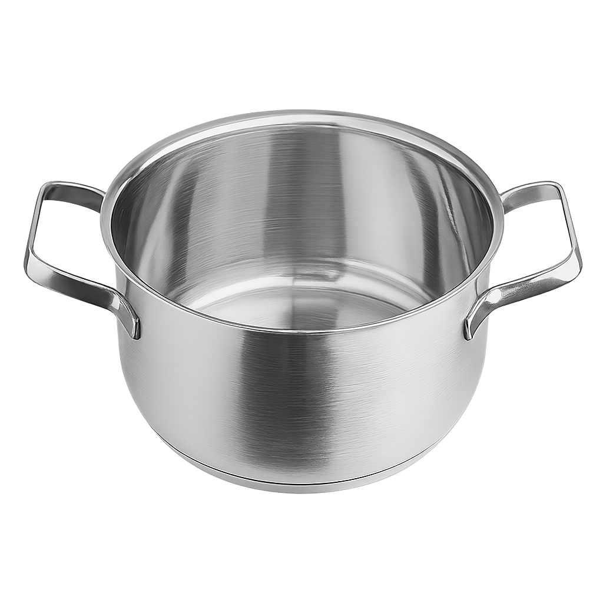
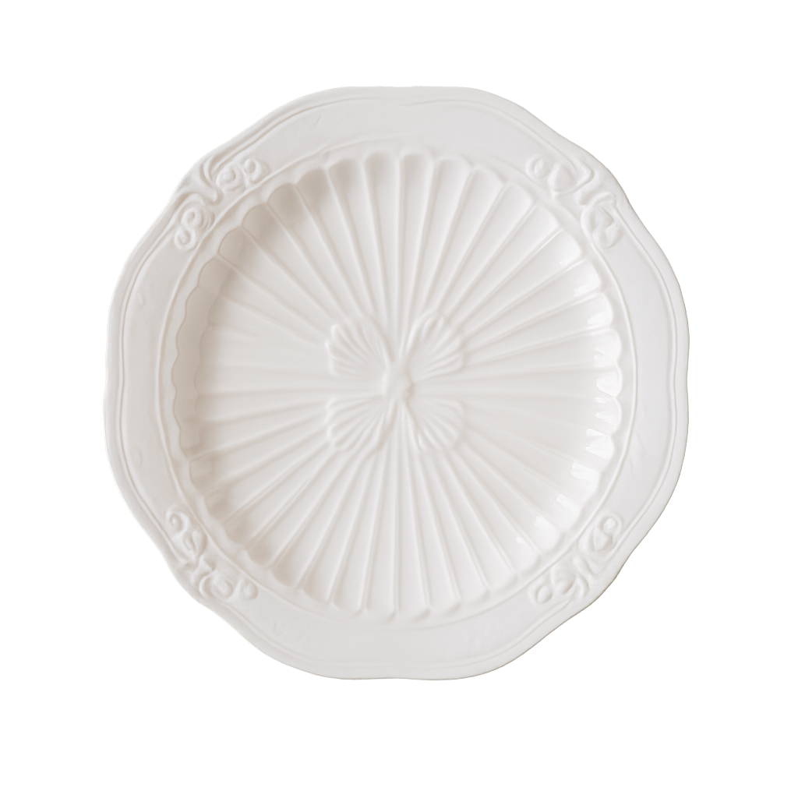
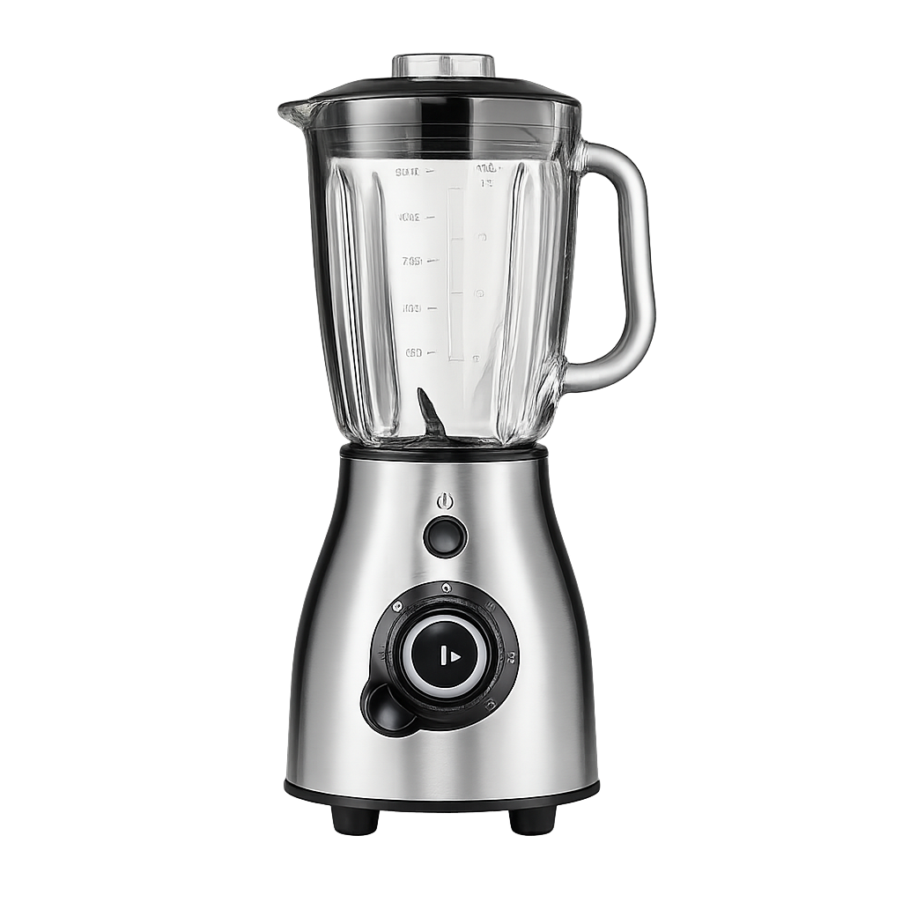
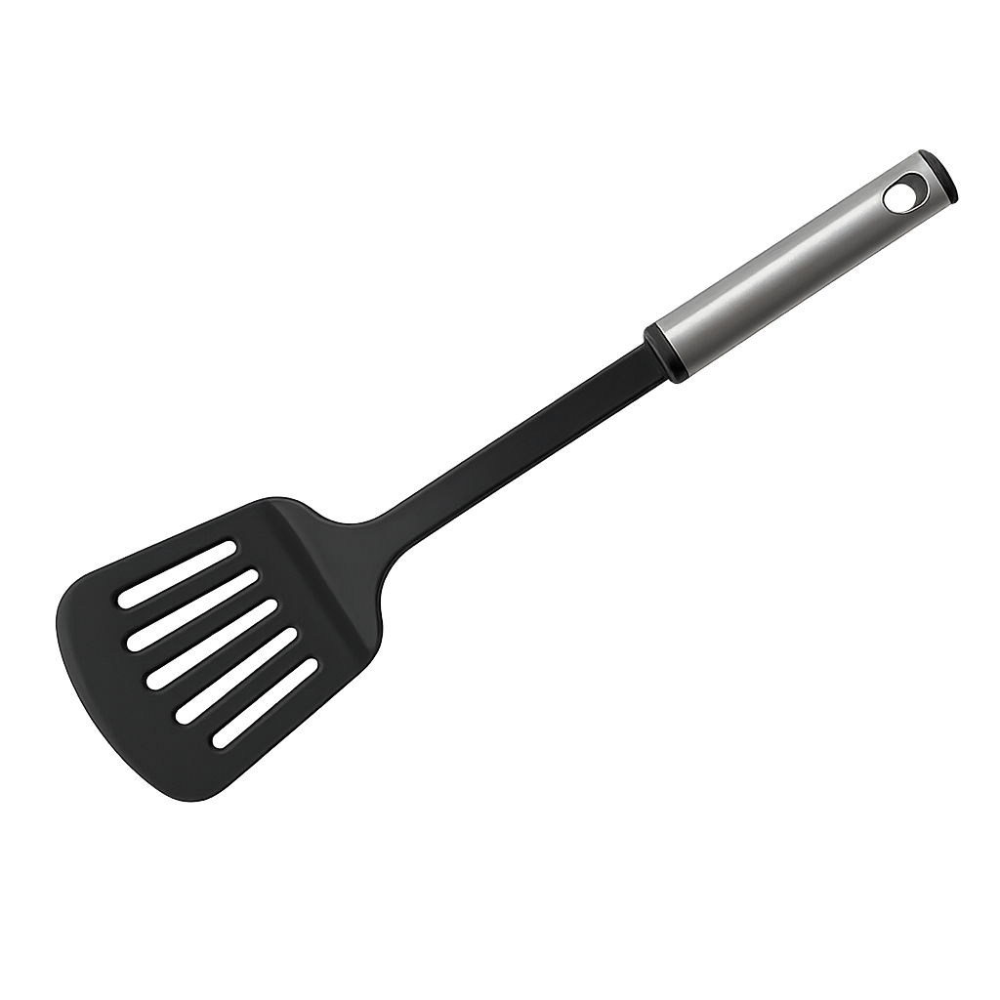

Pudim de leite condensado

- ⏱ 50min
- 💚 Fácil
- 💰 Custo baixo
Veja como fazer essa receita de pudim de leite condensado lisinho e com uma calda perfeita de caramelo. Ele é delicioso, barato e bem rápido de preparar! Com sua textura macia e sabor inconfundível, esse doce é uma verdadeira tentação para os amantes de sobremesas tradicionais. Fácil de preparar e com ingredientes simples, o pudim é uma opção perfeita para adoçar qualquer ocasião especial. Com um modo de preparo bem simples, envolvendo poucos ingredientes como leite condensado, leite, ovos e açúcar para a calda, você irá criar uma sobremesa que certamente vai encantar a todos os paladares. Surpreenda sua família e amigos com esse clássico da culinária, que além de delicioso, possui uma apresentação encantadora. Siga o passo a passo desta receita e mergulhe nessa experiência de sabores que certamente vai conquistar a todos.
Ingredientes (8 porções)
Pudim
-
 1 lata de leite condensado
1 lata de leite condensado
-  1 lata de leite (medida da lata de leite condensado)
- 3 ovos inteiros
Calda
-  1 xícara (chá) de açúcar
- 1/2 xícara de água
Utensílios
-  Forma de pudim
-  Panela
-  Prato de sobremesa
-  Liquidificador
-  Espátula
Modo de preparo
Pudim
- Modo de preparo : 5min
- Preparo : 45min
- Espera : 15min
- Primeiro, bata bem os ovos no liquidificador.
- Acrescente o leite condensado e o leite, e bata novamente.
Calda
- Derreta o açúcar na panela até ficar moreno, acrescente a água e deixe engrossar.
- Coloque em uma forma redonda e despeje a massa do pudim por cima.
- Asse em forno médio por 45 minutos, com a assadeira redonda dentro de uma maior com água.
- Espete um garfo para ver se está bem assado.
- Deixe esfriar e desenforme.